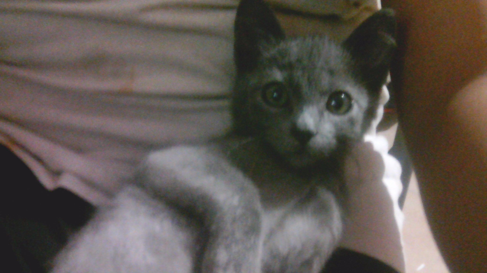

Destinos que tienes que visitar
tacos los gueros
visité este lugar en marzo de 2018
Un pequeño restaurante localizado en cdmx. Si cierras los ojos por un segundo, tal vez podras oler los tacos . Pon mucha atención al letrero color rojo que dice “Tcos los gueros” cuando pases por la autopista principal. El restaurante tiene un menú muy bueno a precios razonables. La comida es deliciosa y las porciones son grandes, medianas y chicas. Algunos platillos, incluso, pueden ser compartidos hasta por dos personas. Podrás ver a muchas celebridades rondando por aquí. Asegúrate de reservar una mesa si no quieres perderte de la experiencia. Este lugar es cede del famoso "los tacos" al que tienes que asistir si tienes la oportunidad.
Cancha de basketball
visité este lugar en febrero de 2015
Es un lugar fantástico. Tienes que venir aquí. Si te animas a venir, con amigoa para jugar, divertirte y desestrezarte un rato
Reseñas de películas

Excelente manera de concluir la saga del MCU.
Vi la película hoy con mis hijos y les encantó. Eso sí, debes de tener al menos un conocimiento básico de lo que pasó en las películas anteriores o no entenderás el 40 % de la película. Antes de ver Endgame, tienes que ver Infinity War, Civil War, Black Panther, Age of Ultron, Ant-Man and the Wasp. Esta película es un homenaje a todos los filmes de superhéroes de Marvel. Te encantará. Al inicio de la película (aquí viene un pequeño spoiler) hay una decapitación muy impresionante. Esta es la película de ciencia ficción más hablada y popular. En la película, podrás ver cómo los Vengadores se unen una vez más para revertir los acontecimientos que causó Thanos y regresar el balance al universo. Esta película es muy larga, dura alrededor de 3 horas.

Buena película para los niños.
El Dios del Trueno (Chris Hemsworth) emprende un viaje que no se parece en nada a lo que se ha enfrentado hasta ahora: una búsqueda de la paz interior. Pero el retiro de Thor se ve interrumpido por un asesino galáctico conocido como Gorr el Carnicero de Dioses (Christian Bale), que busca la extinción de los dioses. Para hacer frente a la amenaza, Thor solicita la ayuda del Rey Valkiria (Tessa Thompson), de Korg (Taika Waititi) y de su ex novia Jane Foster (Natalie Portman) que, para sorpresa de Thor, empuña inexplicablemente su martillo mágico, Mjolnir, como la Poderosa Thor. Juntos, se embarcan en una aventura cósmica en la que tendrán que descubrir el misterio de la venganza del Carnicero de Dioses y detenerlo antes de que sea demasiado tarde. (FILMAFFINITY)
Lista de libros

.jpg)
